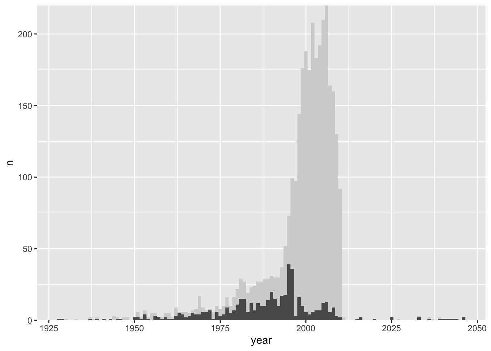

These notes provide more realistic examples of linked brushing. Though the visual design problems they address are more complex, they follow the same recipe described earlier,
A reactiveVal is defined to track the currently selected samples.
An observeEvent is used to update the reactiveVal every time a plot is brushed.
Downstream render contexts update plot and data table outputs whenever the reactiveVal is changed.
The first example implements linked brushing on the movie ratings dataset presented earlier. Before we used a slider to select movies within a user-specified time range. Our graphical alternative is to allow selections over a histogram of movie release dates within the dataset. Specifically, we will create an interactive version of the histogram below,
and when a subset of years of has been brushed, we will highlight the corresponding movies in the same kind of scatterplot used in the earlier, slider-based implementation.
Viewed more abstractly, we are going to use a brush to link the histogram and scatterplot views. We will be able to evaluate the change in a visualization (the scatterplot) after “conditioning” on a subset defined by a complementary view (the histogram). This is analogous to the penguins dataset example – only the form of the base plots has changed.
The main logic needed to link these views is given in the block below. The histogram plotOutput in the UI is given a brush which will be used to select years1. We use the selected reactive value to store a list of TRUE/FALSE’s indicating which movie falls into the currently brushed time range. Each time the brushed range is changed, the output$scatterplot and output$table outputs are regenerated, highlighting those movies that appear in the selected() list.
We haven’t included the full code for histogram, scatterplot, and data_table, since they in and of themselves don’t require any logic for interactivity. You can try out the full code here and tinker with the interface below.
A natural extension of the previous app is to allow brushing on both the histogram and the scatterplot. Brushing over the scatterplot would show the years during which the selected movies were released – this can be used to find out if very poorly or highly rated movies are associated with specific time ranges, for example.
The updated application is below. The main differences are that,
The scatterplot plotOutput now includes a brush.
We are passing in the reactive value of the selected() movies into the histogram as well.
For the scatterplot, we simply reduced the transparency for the movies that weren’t selected. We cannot do this for the histogram, though, because the movies are not directly represented in this plot, only their counts over time. Instead, our idea will be to draw two overlapping histograms. A static one in the background will represent the year distribution before any selection. A changing one in the foreground will be redrawn whenever the selected movies are changed. For example, the code below overlays two geom_bar layers, with one corresponding only to the first 500 movies in the dataset.
::: {.cell}
sub_counts <- movies[1:500, ] %>%count(year) movies %>%count(year) %>%ggplot(aes(year, n)) +geom_bar(stat ="identity", fill ="#d3d3d3", width =1) +geom_bar(data = sub_counts, stat ="identity", width =1) +scale_y_continuous(expand =c(0, 0))
::: {.cell-output-display}  ::: :::
Combining these ideas leads to the app here and included below. Try brushing on both the scatterplot and the histogram. The especially interesting thing about this approach is that, without introducing any new screen elements, we’ve widened the class of questions of that can be answered. In a sense, we’ve increased the information density of the display – we can present more information without having to introduce any peripheral UI components or graphical marks.
In our last problem, we would like to use a dataset of flight delays to understand what characteristics of the flights make some more / less likely to be delayed. The basic difficulty is that there are many potentially relevant variables, and they might interact in ways that are not obvious in advance.
Our solution strategy will be to dynamically link complementary histograms. By brushing the histogram of delays time, we’ll be able to see the conditional distributions for other variables of interest. In principle, we could do this for every variable in the dataset, but for the example, we’ll focus on just the scheduled departure time and flight distance.
The UI in this case creates three separate histograms, each of which introduces a brush. We will plan on brushing one histogram at a time, which is then used to update overlays on each.
ui <-fluidPage(fluidRow(column(6, plotOutput("h1", brush =brushOpts("plot_brush", direction ="x"), height =200),plotOutput("h2", brush =brushOpts("plot_brush", direction ="x"), height =200),plotOutput("h3", brush =brushOpts("plot_brush", direction ="x"), height =200) ),column(6, dataTableOutput("table")) ),)
The logic for drawing the overlays is encapsulated by the functions below. The bar_plot function draws two bar plots over one another, one referring to a global counts object of unchanging histogram bar heights. The second refers to the bar heights for the continually updated overlays. Notice that we use .data[[v]] to use variable names encoded in strings. The plot_overlay function provides the histogram bar heights for variable v after brushing over the flights in selected_.
Code for the full application is linked here. Thanks to shiny’s reactiveVal and brushedPoints definitions, implementing interactivity only requires about 20 lines (starting from ui <- ... to the end). The rest of the code is used to draw new static plots depending on the current selection.
Footnotes
Note that we restrict brush motion to the \(x\)-direction. This is because the \(x\) direction alone encodes year information, which we want to select.↩︎